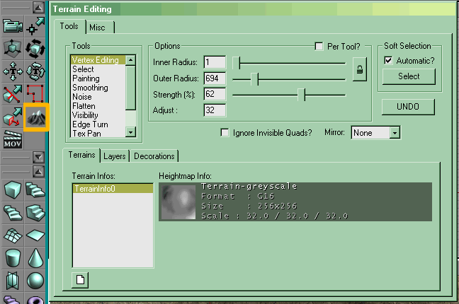

Terrain Mode
Terrain Mode is a toolbox mode new in UnrealEd 3 which allows the mapper to manipulate terrain. It is a very complex swiss army chainsaw (!) of a tool, which allows heightmaps and layer maps to be imported as well as edited on the fly. This page is the reference for Terrain Mode, if you want a tutorial see Creating A Terrain.
To enter this mode, click on the toolbox terrain mode icon (the mountain with snowy peaks); this pops up the Terrain Editing window. To close the window and leave this mode, pick another mode from the toolbox such as the Camera Movement mode.

The Terrain Editing window, with its icon highlighted |
The Terrain Editing window
The Terrain Editing Window is a floating window, of fixed size, with 2 top-level tabs on it:
- Tools : Allows you to edit your terrain, add layers etc.
- Misc : commands to run the terrain generator.
We'll mainly be concerned with Tools.
The Tools Tab
- In the upper left is a list of the available tools.
- In the upper middle and right are options with apply to the tools. Check "per tool?" so each tool remembers its own settings; otherwise they will apply to all the tools.
- The lower half of the window has another set of three tabs, which we'll call the Terrain Layers tabs. This is where you select what the tools will act on – the heightmap, the texture layers, or decoration layers.
The different tools and the brush
All the tools have the same basic interaction interface. Pick a tool from the list by clicking on it. You mostly use them all in the 3D UnrealEd viewport, where the active "brush" is represented by a yellow circle indicating the radius of effec. This yellow circle follows the surface of the terrain, and indicates the inner & outer radius settings. It's a good idea to set the viewport to "wiremesh" view to see vertices more clearly, However, if you have already placed a sunlight in your map, "Dynamic" or "Lighting only" make the terrain curvature easier to see as well.
It is also possible to use some of them in an orthogonal UnrealEd Viewport (the top view is most useful for this). This can make setting terrain visibility easier, or painting layers, or painting very specific parts of the heightmap. With the viewport in focus, hit 'T' to show terrain: it will show textured and lit. It's a good idea to enable the terrain grid visibility (in the layers tab, see below).
You use the control key in combination with either the left or right mouse button to use a tool. In general, if control + left-mouse does one thing, control + right-mouse does the opposite.
The tools are:
- Vertex Editing
- see Vertex Editing Terrain Tool
- Select
- allows you to select a rectangle, presumably to use the "generate" tool on a region instead of the whole terrain
- Painting
- This behaves differently according to whether the Heightmap or a layer is selected in the lower three tabs. More: Painting Terrain Tool
- Heightmap
- raise (LMB) or lower (RMB) the terrain by an amount determined by strength and adjust. The mouse must be moved to effect a change. Set the strength and adjust to quite low with this tool, or large changes will result very quickly.
- Layer
- Mask or un-mask the layer.
- Smoothing
- This will cause the terrain inside your editing circle to blend together and become, well, smoother. This can be looked at as a sort of "averaging" tool, where everything in the area is averaged together towards a middle height. For instance, if you pumped up the radius to much larger than your terrain area with strength of 100%, holding down the LMB would cause you to get, eventually, a flat piece of terrain with the average elevation that all of your terrain had. NOTE: Smoothing off the edge of the terrain is BAD, resulting in an instant UnrealEd crash or vertices suddenly pushed all the way to the minimum terrain height. Save often. Also, the smoothing tool seems to act more quickly on the terrain then other tools. You may want to turn the strength to about 1/4 or 1/2 of what you originally intended.
- Noise
- introduces random changes, raising the terrain in random places by an amount determined from the strength and adjust. Useful for roughing up flat areas to make them look more natural.
- Flatten
- Ctrl + LMB on a terrain vertex, then wherever you drag the mouse will be set to the height of that initial vertex. Useful for creating 'man-made' areas in the terrain e.g. roads. Note that this mode is unlike the others in that it does not modify the surface gradually, but makes an instantanious change. Use with caution.
- Visibility
- This tool is used to show or hide individual polygons and regions of the terrain. What you can't see, you can't touch, so use this tool to make e.g. entrances to caves that allow the player to pass through the terrain. Obviously, you will just drop through any hole to the bottom of the containing subtracted brush, so you need to add BSP geometry around the hole then subtract a cave, or put a static mesh there. The tricky bit is aligning the subterranean part seamlessly with the terrain. See DM-Antalus for a good example.
- Edge Turn
- This tool rotates the tesselation of a certain face. In wireframe view you can see that a terrain map is made up of tesselated squares, but all the tesselation goes the same way. If you have sharp edges on your terrain because of extreme changes in altitude, use the edge turn tool to switch the verticies that the tesselation uses.
- Tex Pan
- Slides the texture of a layer around. I suppose this would be important if you've got a custom texture for the terrain map, otherwise, this has limited use. One good use of this is on Terrain Texture layers where the texture is projected sideways onto the terrain, such as for layered rock. Panning allows you to change the elevation of the layers.
- Tex Rotate
- Rotates the texture of a layer, again, limited use.
- Tex Scale
- Scales the texture of a layer. You can do this more mathematically by opening up the terraininfo's properties and flipping through the layers and changing their scaling properties.
Most terrain editing is done using Painting, Smoothing, Flatten, and occasionally Visibility. The others are useful for very fine control.
The Tool Options
The tools options section changed the settings for the yellow brush you see in the 3D window: its size, and how much it affects the terrain. It is very important, so get used to it, you'll tweak it often  . It consists of several options:
. It consists of several options:
- Per Tool?
- Off means all tools use the same radii, strenth, and adjust values. On allows each tool to have separate settings.
- Inner Radius & Outer Radius
- The outer radius is the size of the area of effect. Some tools, like visibility and flatten, only use the outer radius. They have their full effect anywhere they touch. Other tools, such as raising and lowering terrain, use the inner radius also. These tools have maximum effect inside the inner radius, then drop off to 0 change at the edge of the outer radius. Setting the inner and outer radius the same will cause these tools to have maximum effect for the whole circle. Setting the inner radius to zero will cause a smooth blend from maximum at the center to nothing at the edge. Most of the time, people have a small inner radius and a large outer radius.
- Lock icon
- Tie the Inner Radius & Outer Radius sliders together, so that they increase and decrease together. Useful for having a uniform 'blend edge' while you change the size of the brush.
- Strength & Adjust
- These are sort of like opacity and pressure in Photoshop – they control how much the brush does, and how fast it does it. Larger values for Adjust and Strength will cause modifications to your terrain to happen much faster – often too fast, especially with the smoothing tool.
- Ignore Invisible Quads
- Unknown effect. Perhaps broken?
- Mirror
- lets you work on 2 or 4 parts of your terrain simultaneously. Great for outdoor CTF or ONS maps.
It's pretty intuitive once you've done it a couple of times. When you can see the effect of different settings immediately on how fast that hill rises, and what its shape is, it becomes quite obvious! Experiment a lot – experimentation is rewarded. Recommended settings will be given when treating the individual tools, but for an example, here's the settings that I typically use for the Smoothing tool:
Inner Radius: 0
Outer Radius: 1024 or larger (sometimes as high as 8192)
Strength: 8%
Adjust: 4
In summary:
- All terrain editing is done in the 3D view (use the wiremesh viewmode to see terrain vertices more clearly).
- The brush is a bright yellow circlet
- Use the control key in combination with holding down the left or right mouse buttons to use a tool.
- Strength & Adjust are critical, and usually best kept very low for fine editing
- Experiment, experiment, experiment!
Terrain Layers tabs
Select here which component of the terrain is affected by the tool you use.
Terrains
Lists all terrains currently in your map, listed by the name of their heightmap texture (so if you change these, beware!). Select the one to you want to work with from the list. Double-clicking on the name in the list brings up the Actor Properties for that terrain's TerrainInfo.
Click the New icon to make a new terrain. The terrain will be centered on the 3D UnrealEd Viewport camera (we think!). The zone you are in needs to be set to have bTerrainZone = True. See Creating A Terrain for this in detail.
Layers
Lists the Terrain Texture layers of the current terrain. You can use this area to add new layers and reorder them.
Select a layer here to make the Painting Tool alter that layer's visibility on the terrain. (if nothing seems to happen, remember the display order of the layers: the top layer in the list is the one rendered first, so lowest.)
Use the arrows to the right to change layer order. This can be useful to bring the layer you are working with to the top temporarily. (Here, 'top' means bottom... the first layer in the list is the first to be rendered, so at the it's the one that is beneath all the others on the terrain.)
Use the grid button to toggle the terrain grid display on some or all layers.
Decorations
Create and edit Terrain Decoration layers.
Misc tab
The misc tab holds the settings for the terrain generator. This generates random terrain within the region currently highlighted with the [Select Terrain Tool]?.
Can't think of how you want your terrain to look? Want UnrealEd to give you something more interesting to start with? Use the terrain generator.
- Steps
- Controls how many passes the generator makes over the terrain. More steps mean more hills.
- Strength
- Controls the magnitude of the hills being generated. Max value 255. High values mean steep, craggy peaks that leave almost no place to walk, and low values mean gentle rolling hills that are pretty flat overall.
- Use entire Heightmap?
- Tick this to have the generated surface use all of the terrain space. Unticked, only uses what is currently selected with the Select tool in the terrain editor.
Troubleshooting
- I can't adjust the terrain! LMB + RMB + Ctrl = nothing happens
- The file format of the terrain heightmap is very important. If it's not G16, then you won't be able to edit it properly (if at all) with the tools. If importing your own heightmap, make sure it's 8-bit grayscale, import it, then right-click it on the 'terrain info' tab and convert it to G16.
External Links
UDN

Miscellaneous
Related Topics
- Terrain
- Creating A Terrain – step by step tutorial
- Terrain Texture Layer
- Terrain Decoration Layer
Discussion
EntropicLqd: Try this thread - it uses the UDN tut as a basis and lets you know where things go wrong or stop working. http://ina-community.com/forums/showthread.php?s=&threadid=216389. Then you can fill this page in yourself And make it easier to follow.
Icedude:We realy need a tutoral on Deco Layers. I cant figure them out!
Tahngarth: could we integrate this with Using The Terrain Tool somehow? This part seems more a description of the tools than a step-by-step tutorial. Part I is quite important and well done tutorial, but this part seems just a tool function summary. I'm not sure what to do here, but theres bound to be some duplication going on if i finish writing that page now.
ProjectX: Ok, i've dun terrain before, and mastered it, I have a cavern set up with two terrain actors, one above the other, they used to be using the same heightmap, but i changed it. Now, i place playerstarts, and rebuild, they come up with "this player start is not on an even base or neer a steep slope", i finally got that to stop and i tested the game and it said it couldnt find the player starts. I had 17 on there and i had rebuilt the level without a single error. I tried loading the map up again and it GPFd
ZxAnPhOrIaN: What type of rebuilding did you use? If you did geometry, use the path rebuild button. If you did paths, use the geometry rebuild button, and then use the path button. That happened to me once.
MadNad: Another interesting thing to note that I found was that by increasing the size of your heightmap when creating terrain layer from 128x128 to 256x256 makes some pretty crisp shadowing, along with longer compiles and lower frames, but still, very cool feature.
Tesseract: Im not sure where to put this, so i'll put it here til told otherwise. I have Real Life data stores in autocad. i would like to see the steps to turning this into editable unrealed terrain if possible. so far i know: get dwg contours, import to 3d studio. create terrain object. from there on out, i am unsure of how to get EDITABLE terrain. i can export to ASE, then change to t3d, and get a brush. import ASE directly and get a static mesh. none of these things is what i want, any ideas? i'll give a sweet write-up if i ever figure it out
WheatPuppet: I think your objective would be to, instead of making a 3d model, would be to generate a grayscale heightmap. I don't know if that's possible in either of those programs, but if you want it to actually be a terrain, you're going to need a grayscale.
Evilmrfrank: Im having a problem. Ive been able to complete making terrains in the past succesfully but for some reason it will not allow me to use the smoothing tool and some of the others.
Bob_The_Beheader: Maybe Terragen can import your model. I don't have the program on me right now so I couldn't tell you, but you could check. Also, you can take a screenshot of the model in windows, the PrintScreen captures an image of the current screen, and puts it on the clipboard, where you can paste it into an image document or something, clean it up, and then you've got yourself a heightmap.
Category Mapping
Category Troubleshooting
Category To Do – fill in the other terrain tools